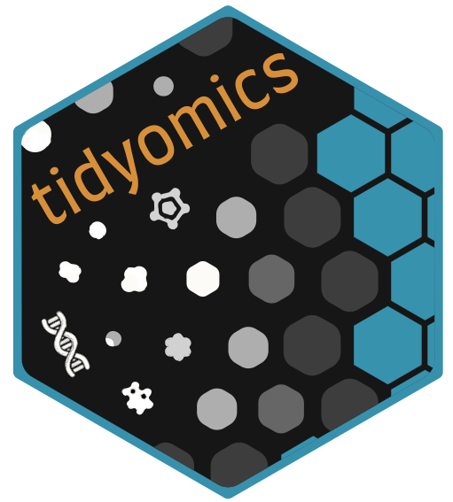

bash
docker run -it ghcr.io/js2264/biocbook.tidyomics:devel R
Package: BiocBook.tidyomics
Authors: First Last [aut, cre]
Compiled: 2024-07-26
Package version: 0.98.0
R version: R version 4.4.1 (2024-06-14)
BioC version: 3.20
License: MIT + file LICENSE
This is the landing page of the BiocBook entitled ….
This book introduces the reader to ….
A Docker image built from this repository is available here:
👉 ghcr.io/js2264/biocbook.tidyomics 🐳
You can get access to all the packages used in this book in < 1 minute, using this command in a terminal:
bash
docker run -it ghcr.io/js2264/biocbook.tidyomics:devel RAn RStudio Server instance can be initiated from the Docker image as follows:
bash
docker run \
--volume <local_folder>:<destination_folder> \
-e PASSWORD=OHCA \
-p 8787:8787 \
ghcr.io/js2264/biocbook.tidyomics:develThe initiated RStudio Server instance will be available at https://localhost:8787.
sessioninfo::session_info(
installed.packages()[,"Package"],
include_base = TRUE
)
## ─ Session info ────────────────────────────────────────────────────────────
## setting value
## version R version 4.4.1 (2024-06-14)
## os Ubuntu 22.04.4 LTS
## system x86_64, linux-gnu
## ui X11
## language (EN)
## collate C
## ctype en_US.UTF-8
## tz Etc/UTC
## date 2024-07-26
## pandoc 3.2 @ /usr/bin/ (via rmarkdown)
##
## ─ Packages ────────────────────────────────────────────────────────────────
## package * version date (UTC) lib source
## askpass 1.2.0 2023-09-03 [2] RSPM (R 4.4.0)
## base * 4.4.1 2024-06-14 [3] local
## base64enc 0.1-3 2015-07-28 [2] RSPM (R 4.4.0)
## BiocBook.tidyomics 0.98.0 2024-07-26 [1] local
## BiocManager 1.30.23 2024-05-04 [2] CRAN (R 4.4.1)
## BiocStyle 2.33.1 2024-06-12 [2] Bioconductor 3.20 (R 4.4.0)
## BiocVersion 3.20.0 2024-05-01 [2] Bioconductor 3.20 (R 4.4.1)
## bookdown 0.40 2024-07-02 [2] RSPM (R 4.4.0)
## boot 1.3-30 2024-02-26 [3] CRAN (R 4.4.1)
## brew 1.0-10 2023-12-16 [2] RSPM (R 4.4.0)
## brio 1.1.5 2024-04-24 [2] RSPM (R 4.4.0)
## bslib 0.7.0 2024-03-29 [2] RSPM (R 4.4.0)
## cachem 1.1.0 2024-05-16 [2] RSPM (R 4.4.0)
## callr 3.7.6 2024-03-25 [2] RSPM (R 4.4.0)
## class 7.3-22 2023-05-03 [3] CRAN (R 4.4.1)
## cli 3.6.3 2024-06-21 [2] RSPM (R 4.4.0)
## clipr 0.8.0 2022-02-22 [2] RSPM (R 4.4.0)
## cluster 2.1.6 2023-12-01 [3] CRAN (R 4.4.1)
## codetools 0.2-20 2024-03-31 [3] CRAN (R 4.4.1)
## commonmark 1.9.1 2024-01-30 [2] RSPM (R 4.4.0)
## compiler 4.4.1 2024-06-14 [3] local
## cpp11 0.4.7 2023-12-02 [2] RSPM (R 4.4.0)
## crayon 1.5.3 2024-06-20 [2] RSPM (R 4.4.0)
## credentials 2.0.1 2023-09-06 [2] RSPM (R 4.4.0)
## curl 5.2.1 2024-03-01 [2] RSPM (R 4.4.0)
## datasets * 4.4.1 2024-06-14 [3] local
## desc 1.4.3 2023-12-10 [2] RSPM (R 4.4.0)
## devtools 2.4.5 2022-10-11 [2] RSPM (R 4.4.0)
## diffobj 0.3.5 2021-10-05 [2] RSPM (R 4.4.0)
## digest 0.6.36 2024-06-23 [2] RSPM (R 4.4.0)
## docopt 0.7.1 2020-06-24 [2] RSPM (R 4.4.1)
## downlit 0.4.4 2024-06-10 [2] RSPM (R 4.4.0)
## ellipsis 0.3.2 2021-04-29 [2] RSPM (R 4.4.0)
## evaluate 0.24.0 2024-06-10 [2] RSPM (R 4.4.0)
## fansi 1.0.6 2023-12-08 [2] RSPM (R 4.4.0)
## fastmap 1.2.0 2024-05-15 [2] RSPM (R 4.4.0)
## fontawesome 0.5.2 2023-08-19 [2] RSPM (R 4.4.0)
## foreign 0.8-87 2024-06-26 [2] RSPM (R 4.4.0)
## fs 1.6.4 2024-04-25 [2] RSPM (R 4.4.0)
## gert 2.0.1 2023-12-04 [2] RSPM (R 4.4.0)
## gh 1.4.1 2024-03-28 [2] RSPM (R 4.4.0)
## gitcreds 0.1.2 2022-09-08 [2] RSPM (R 4.4.0)
## glue 1.7.0 2024-01-09 [2] RSPM (R 4.4.0)
## graphics * 4.4.1 2024-06-14 [3] local
## grDevices * 4.4.1 2024-06-14 [3] local
## grid 4.4.1 2024-06-14 [3] local
## highr 0.11 2024-05-26 [2] RSPM (R 4.4.0)
## htmltools 0.5.8.1 2024-04-04 [2] RSPM (R 4.4.0)
## htmlwidgets 1.6.4 2023-12-06 [2] RSPM (R 4.4.0)
## httpuv 1.6.15 2024-03-26 [2] RSPM (R 4.4.0)
## httr2 1.0.2 2024-07-16 [2] RSPM (R 4.4.0)
## ini 0.3.1 2018-05-20 [2] RSPM (R 4.4.0)
## jquerylib 0.1.4 2021-04-26 [2] RSPM (R 4.4.0)
## jsonlite 1.8.8 2023-12-04 [2] RSPM (R 4.4.0)
## KernSmooth 2.23-24 2024-05-17 [3] CRAN (R 4.4.1)
## knitr 1.48 2024-07-07 [2] RSPM (R 4.4.0)
## later 1.3.2 2023-12-06 [2] RSPM (R 4.4.0)
## lattice 0.22-6 2024-03-20 [3] CRAN (R 4.4.1)
## lifecycle 1.0.4 2023-11-07 [2] RSPM (R 4.4.0)
## littler 0.3.20 2024-03-23 [2] RSPM (R 4.4.1)
## magrittr 2.0.3 2022-03-30 [2] RSPM (R 4.4.0)
## MASS 7.3-61 2024-06-13 [2] RSPM (R 4.4.0)
## Matrix 1.7-0 2024-04-26 [3] CRAN (R 4.4.1)
## memoise 2.0.1 2021-11-26 [2] RSPM (R 4.4.0)
## methods * 4.4.1 2024-06-14 [3] local
## mgcv 1.9-1 2023-12-21 [3] CRAN (R 4.4.1)
## mime 0.12 2021-09-28 [2] RSPM (R 4.4.0)
## miniUI 0.1.1.1 2018-05-18 [2] RSPM (R 4.4.0)
## nlme 3.1-165 2024-06-06 [2] RSPM (R 4.4.0)
## nnet 7.3-19 2023-05-03 [3] CRAN (R 4.4.1)
## openssl 2.2.0 2024-05-16 [2] RSPM (R 4.4.0)
## parallel 4.4.1 2024-06-14 [3] local
## pillar 1.9.0 2023-03-22 [2] RSPM (R 4.4.0)
## pkgbuild 1.4.4 2024-03-17 [2] RSPM (R 4.4.0)
## pkgconfig 2.0.3 2019-09-22 [2] RSPM (R 4.4.0)
## pkgdown 2.1.0 2024-07-06 [2] RSPM (R 4.4.0)
## pkgload 1.4.0 2024-06-28 [2] RSPM (R 4.4.0)
## praise 1.0.0 2015-08-11 [2] RSPM (R 4.4.0)
## preprocessCore 1.67.0 2024-05-01 [2] Bioconductor 3.20 (R 4.4.1)
## prettyunits 1.2.0 2023-09-24 [2] RSPM (R 4.4.0)
## processx 3.8.4 2024-03-16 [2] RSPM (R 4.4.0)
## profvis 0.3.8 2023-05-02 [2] RSPM (R 4.4.0)
## promises 1.3.0 2024-04-05 [2] RSPM (R 4.4.0)
## ps 1.7.7 2024-07-02 [2] RSPM (R 4.4.0)
## purrr 1.0.2 2023-08-10 [2] RSPM (R 4.4.0)
## R6 2.5.1 2021-08-19 [2] RSPM (R 4.4.0)
## ragg 1.3.2 2024-05-15 [2] RSPM (R 4.4.0)
## rappdirs 0.3.3 2021-01-31 [2] RSPM (R 4.4.0)
## rcmdcheck 1.4.0 2021-09-27 [2] RSPM (R 4.4.0)
## Rcpp 1.0.13 2024-07-17 [2] RSPM (R 4.4.0)
## rematch2 2.1.2 2020-05-01 [2] RSPM (R 4.4.0)
## remotes 2.5.0 2024-03-17 [2] RSPM (R 4.4.0)
## rlang 1.1.4 2024-06-04 [2] RSPM (R 4.4.0)
## rmarkdown 2.27 2024-05-17 [2] RSPM (R 4.4.0)
## roxygen2 7.3.2 2024-06-28 [2] RSPM (R 4.4.0)
## rpart 4.1.23 2023-12-05 [3] CRAN (R 4.4.1)
## rprojroot 2.0.4 2023-11-05 [2] RSPM (R 4.4.0)
## rstudioapi 0.16.0 2024-03-24 [2] RSPM (R 4.4.0)
## rversions 2.1.2 2022-08-31 [2] RSPM (R 4.4.0)
## sass 0.4.9 2024-03-15 [2] RSPM (R 4.4.0)
## sessioninfo 1.2.2 2021-12-06 [2] RSPM (R 4.4.0)
## shiny 1.8.1.1 2024-04-02 [2] RSPM (R 4.4.0)
## sourcetools 0.1.7-1 2023-02-01 [2] RSPM (R 4.4.0)
## spatial 7.3-17 2023-07-20 [3] CRAN (R 4.4.1)
## splines 4.4.1 2024-06-14 [3] local
## stats * 4.4.1 2024-06-14 [3] local
## stats4 4.4.1 2024-06-14 [3] local
## stringi 1.8.4 2024-05-06 [2] RSPM (R 4.4.0)
## stringr 1.5.1 2023-11-14 [2] RSPM (R 4.4.0)
## survival 3.7-0 2024-06-05 [2] RSPM (R 4.4.0)
## sys 3.4.2 2023-05-23 [2] RSPM (R 4.4.0)
## systemfonts 1.1.0 2024-05-15 [2] RSPM (R 4.4.0)
## tcltk 4.4.1 2024-06-14 [3] local
## testthat 3.2.1.1 2024-04-14 [2] RSPM (R 4.4.0)
## textshaping 0.4.0 2024-05-24 [2] RSPM (R 4.4.0)
## tibble 3.2.1 2023-03-20 [2] RSPM (R 4.4.0)
## tinytex 0.52 2024-07-18 [2] RSPM (R 4.4.0)
## tools 4.4.1 2024-06-14 [3] local
## urlchecker 1.0.1 2021-11-30 [2] RSPM (R 4.4.0)
## usethis 2.2.3 2024-02-19 [2] RSPM (R 4.4.0)
## utf8 1.2.4 2023-10-22 [2] RSPM (R 4.4.0)
## utils * 4.4.1 2024-06-14 [3] local
## vctrs 0.6.5 2023-12-01 [2] RSPM (R 4.4.0)
## waldo 0.5.2 2023-11-02 [2] RSPM (R 4.4.0)
## whisker 0.4.1 2022-12-05 [2] RSPM (R 4.4.0)
## withr 3.0.0 2024-01-16 [2] RSPM (R 4.4.0)
## xfun 0.46 2024-07-18 [2] RSPM (R 4.4.0)
## xml2 1.3.6 2023-12-04 [2] RSPM (R 4.4.0)
## xopen 1.0.1 2024-04-25 [2] RSPM (R 4.4.0)
## xtable 1.8-4 2019-04-21 [2] RSPM (R 4.4.0)
## yaml 2.3.9 2024-07-05 [2] RSPM (R 4.4.0)
## zip 2.3.1 2024-01-27 [2] RSPM (R 4.4.0)
##
## [1] /tmp/RtmpVcjgI5/Rinst8c53fe9181
## [2] /usr/local/lib/R/site-library
## [3] /usr/local/lib/R/library
##
## ───────────────────────────────────────────────────────────────────────────